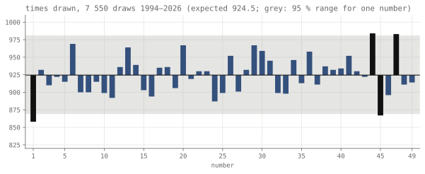
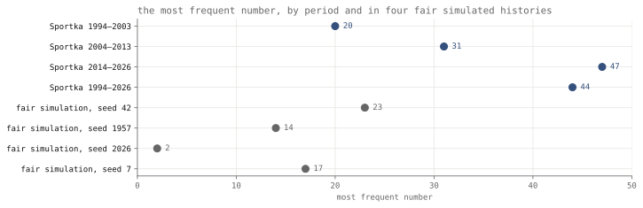
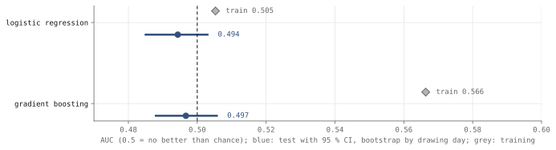
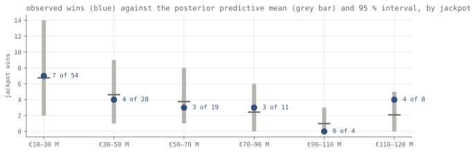
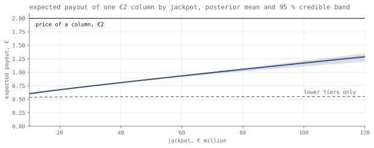
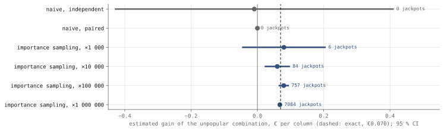

Research · lotteries · Sportka 1994–2026, Eurojackpot 2025–2026
What a lottery player can choose: Sportka 1994–2026 and Eurojackpot 2025–2026
This exploratory study asks what a lottery player can choose: 7 550 Sportka draws show no large favoured number, and at Eurojackpot's cap a combination assumed to be 0.4 times as popular as average would add about €0.07 to a €2 column worth €1.29.
- Sportka numbers against uniform
- p = 0.55 χ² 41.2 · 7 550 draws · Monte Carlo null
- predicting the next draw, test AUC
- 0.497 95 % CI 0.488–0.506, bootstrap by drawing day
- expected payout of a €2 Eurojackpot column at the €120 M cap
- €1.29 95 % CrI 1.19–1.35 · 124 draws · exploratory
- gain from an unpopular combination at the cap
- €0.069 95 % CrI 0.031–0.118, sales uncertainty only · assumed popularity 0.4 of average
Overwhelmed? Here's the short version
- The only thing a player's choice of numbers changes is how many people share a prize.
- Sportka's history shows no large favoured number, and past draws do not predict the next one; a number drawn up to about 10 % more often would likely go unnoticed even in 32 years.
- A Eurojackpot column pays back less than its price at every jackpot seen.
- Picking a combination few others pick adds a few cents, and only at large jackpots.
- Everything is exploratory; how popular a combination is was assumed, not measured.
- The Eurojackpot numbers rest on 124 draws transcribed from lotto.net and a model of sales inferred from jackpot wins; real sales figures from the operators, or data on which combinations players actually pick, could change the €0.07.
Photo: U.S. National Archives · CC0, toned
A lotto ticket is a choice of numbers, and in a pari-mutuel game, where the winners of a prize tier split it, that choice touches three quantities: the probability of winning each prize, the size of the prize pool, and the number of other winners who share a prize when it is won. The first is fixed by the rules as long as the draw is fair, the second depends on how many tickets everyone else buys, and only the third depends on which numbers a player picks, because players do not choose uniformly. Cook and Clotfelter showed that lotto sales rise with the jackpot and with the population of players5, Farrell and co-authors estimated how conscious selection of numbers concentrates winners in UK Lotto6, and Walker and Forrest, Gulley and Simmons estimated how demand responds to the jackpot78. This study puts the three quantities side by side on Czech data. It tests whether 32 years of Sportka draws are uniform and whether the past predicts the next draw, estimates how Eurojackpot sales respond to the jackpot and what one column is worth at each jackpot, and works out, for an assumed range of combination popularity, how much the only lever a player holds is worth, and why a plain simulation cannot see it. The work began as a question the author asked herself before a large Sportka jackpot in May 2026.
Data
The Sportka file is the operator's export of every drawing day since 9 January 19941, 3 775 days to 5 July 2026. On each day two independent draws take six main numbers and one bonus number from 1 to 49, so the file holds 7 550 draws and 45 300 main numbers; draws before 1994 and the separate Šance game are not in it. Every draw holds seven different numbers between 1 and 49. For the 172 drawing days between 2 May 2025 and 5 July 2026 that also appear in a second, independent transcription from sportkasazka.cz4, all 344 draws agree number for number.
The Eurojackpot file covers the 124 draws from 28 February 2025 to 5 May 2026, each with the advertised jackpot and whether it was won, transcribed from the lotto.net result pages2. All fall under the rules in force since March 2022, five numbers of 50 and two of 12, which give 139 838 160 combinations and cap the jackpot at €120 million. The jackpot ranged from €10.0 million to €120.2 million and was won 21 times; two rows, €120.15 and €120.19 million, exceed the cap slightly and are kept as transcribed. Operators do not publish ticket sales per draw, so sales enter only through the model below. The lotto.net values were not checked against the operators' own records. The prize-fund shares of the twelve tiers, 50 % of each €2 stake with 36 % of the fund for the jackpot tier and 9 % for a booster fund, come from euro-jackpot.net3, a secondary source.
How this was done
The Sportka test compares the 45 300 main numbers with a uniform draw. Six numbers are taken without replacement, so the 49 counts are negatively correlated and the Pearson statistic does not follow a chi-square distribution with 48 degrees of freedom under fairness; its null mean is 43, not 48. The p-value therefore comes from 10 000 simulated fair histories of the same size, drawn the way the machine draws. Each number's count is tested against its exact Binomial(7 550, 6/49) margin, with the Benjamini–Hochberg correction, which controls the expected share of false discoveries, over 49 numbers9. The inference unit is the draw, and the effective n is 7 550 draws. For the first draw of each drawing day (the second draw is not used) and each number, the prediction test builds features from earlier first draws only (draws since the number last appeared, its frequency in the last 10 and 50 draws and overall, the day of the week, the week of the year and the number itself), trains logistic regression and gradient boosting10 on the first 2 972 days after a 60-day warm-up and tests on the last 743, from 10 October 2021, with intervals from a bootstrap over test days.
For Eurojackpot, the effective number of columns sold, the number that would give the observed wins if every column were picked at random, is modelled as N(J) = N0 (J / €10 M)β, where β is the elasticity of sales with respect to the jackpot. If columns were picked at random, a jackpot would be won with probability 1 − e−N/C, with C = 139 838 160, and the 124 win flags identify N0 and β. The posterior is computed on a grid with weakly informative priors, log N0 ~ N(15, 3) and β ~ N(0.5, 1), and checked by simulating wins from it11. The estimand for a player is the expected payout of one €2 column at jackpot J: the jackpot times the chance of hitting it times the expected share when K other columns also hit it, E[1/(1 + K)] = (1 − e−m)/m for K ~ Poisson(m), plus the eleven lower tiers computed the same way, with the whole posterior of N carried through. A combination chosen by π times as many players as the average one has m = πN/C. The values π = 0.4 for an unpopular and 2.5 for a popular combination are assumptions, since no data on the choices of Eurojackpot players across the participating countries were available.
The tests
| Question | Test | Result |
|---|---|---|
| Are the 49 Sportka numbers drawn equally often, 1994–2026? | chi-square statistic, Monte Carlo null for draws without replacement | no departure found χ² 41.2, p = 0.55 |
| Is any single number drawn more or less often than chance? | exact binomial tests, Benjamini–Hochberg over 49 | none smallest adjusted p 0.53 |
| Do earlier draws predict the next one? | test AUC and log loss against a constant 6/49 | no AUC 0.494 and 0.497, both intervals include 0.5 |
| Do Eurojackpot sales rise with the jackpot? | posterior of the elasticity β | not established β 0.41, 95 % CrI −0.15 to 0.99 |
| Does the sales model reproduce the observed wins? | posterior predictive check by jackpot range | no misfit found p = 0.80 |
None of the tests was registered, so the table uses descriptive wording and none of the labels this site keeps for registered tests. The expected value and the simulation study are estimates, not tests, and are reported below.
How often each Sportka number was drawn, 1994–2026
With 45 300 main numbers drawn, each of the 49 would be expected 924.5 times. The observed counts run from 858, for number 1, to 984, for number 44, and give a statistic of 41.2 (fig. 1). Under fair draws the simulated statistic has a mean of 43.0 and a 95th percentile of 58.4, and 55 % of the simulated histories are at least as far from uniform as the real one (p = 0.55, Monte Carlo standard error 0.005). Read against the chi-square table with 48 degrees of freedom, the same statistic gives p = 0.75, which overstates how comfortably the draw fits because that table assumes independent counts. The size of the departure, measured as Cramér's V, an effect size from 0 for perfectly even counts to 1, is 0.004.

Four numbers fall outside the range that holds any one number 95 % of the time: 1 and 45 below it, 44 and 47 above. With 49 numbers, about 2.5 would do so by chance, and after the Benjamini–Hochberg correction no number departs from its expected count, the smallest adjusted p-value being 0.53. The two daily draws taken separately give p = 0.42 and 0.30, again against simulated nulls, and the bonus number, one per draw and so a plain multinomial, gives p = 0.41.
Splitting the history into three periods leaves the conclusion unchanged, with p = 0.58 for 1994–2003, 0.13 for 2004–2013 and 0.26 for 2014–2026, but the most frequent number is different in each: 20 in the first period, 31 in the second and 47 in the third, and 44 over the whole history (fig. 2). The same happens in fair draws. Four simulated fair histories of 7 550 draws, generated with four fixed seeds, have 23, 14, 2 and 17 as their most frequent number, while the p-value of the real statistic against each seed's null stays between 0.54 and 0.57. The fairness verdict is thus stable under a change of seed or window, and the identity of the "hot" number is not.

The test can miss small biases. In simulated histories in which one number is drawn 5 % more often than the others, the same Monte Carlo test at the 5 % level rejects fairness 8 % of the time; at 9 % more often it rejects 22 % of the time, and at 18 % more often 87 % of the time. A bias of a few per cent in one number would therefore go undetected in 32 years of Sportka, and the result is read as the absence of a large bias.
Predicting the next Sportka draw from the earlier ones
A number that has not come up for a long time is "due" and one that came up often recently is "hot"; both beliefs predict something testable, that the number's chance in the next draw depends on its past. On the 743 most recent drawing days neither model separates the drawn numbers from the others (fig. 3). The AUC is the chance that a model ranks a drawn number above an undrawn one (0.5 is guessing); log loss penalises confident wrong predictions, lower being better. Logistic regression reaches a test AUC of 0.494 (95 % CI 0.485–0.503) and gradient boosting 0.497 (95 % CI 0.488–0.506). Gradient boosting reaches 0.566 on the days it was fitted to, which is what fitting noise looks like, and its test log loss is worse than the constant 6/49 by 0.00041 (95 % CI 0.00019–0.00061). The log loss of the logistic model differs from the constant by 0.00005 (95 % CI −0.00001 to 0.00010).

Eurojackpot sales and the size of the jackpot
With the draw taken as fair, the second quantity is the prize pool, which grows as more columns are sold. Fitted to the 124 draws, the model puts effective sales at the €10 million minimum at 14.8 million columns (95 % credible interval, CrI, the range holding the value with 95 % probability under the model, 5.8–33.7 million; the exponential of the posterior mean of log N0) and the elasticity at β = 0.41 (95 % CrI −0.15 to 0.99). The posterior puts 93 % of its mass on a positive elasticity, but 21 wins cannot rule out sales that do not respond to the jackpot at all. At the €120 million cap the implied effective sales are 43.9 million columns (95 % CrI 17.6–84.2 million). Under the fitted model the chance that someone wins the jackpot in a draw would rise from 0.11 (95 % CrI 0.04–0.21) at the minimum to 0.26 (95 % CrI 0.12–0.45) at the cap; with an elasticity of zero, which the data cannot exclude, it would not rise at all.
Wins simulated from the posterior match the observed wins in all six jackpot ranges (fig. 4), and a chi-square discrepancy over the six ranges gives a posterior predictive p-value of 0.80 (the share of simulated records that fit worse than the real one). The range with the largest gap is the top one, €110–120 million, with 4 wins in 8 draws against 2.1 predicted (two-sided p = 0.30); a surge of sales at the cap that the power law does not capture would show up there first, and eight draws are too few to tell. Sorted into quartiles by their predicted chance of a win, the draws were won at rates between 0.10 and 0.26 against predictions between 0.11 and 0.23, the largest gap being 0.05.

Expected value of a Eurojackpot column by jackpot
Putting the sales model and the prize-fund shares together gives the expected payout of one €2 column (fig. 5). At the €10 million minimum it is €0.60 (95 % CrI 0.58–0.61), 30 % of the stake; at €50 million it is €0.87 (95 % CrI 0.86–0.88), and at the €120 million cap €1.29 (95 % CrI 1.19–1.35), 64 % of the stake. The eleven lower tiers contribute between €0.54 and €0.55 throughout, since their funds grow with sales and their winners grow in proportion. The expected loss is therefore €1.40 per column at the minimum and €0.71 at the cap, and no jackpot in the range the rules allow brings the expected payout up to the price. Taxes, the booster fund's later payouts and any money above the cap that the rules may pass to a lower tier, which would raise the value at the cap, are not included. Because real players do not pick uniformly, real sales exceed the effective number, so co-winners are understated here and the popularity gain probably too, by an unknown amount.

The payout of fig. 5 is for a combination as popular as the average one. When a combination is won, the expected share of the jackpot is (1 − e−m)/m with m = πN/C, so at the cap an average combination keeps 0.86 of the jackpot on average, an unpopular one (π = 0.4) 0.94 and a popular one (π = 2.5) 0.70. The unpopular combination's share is 1.36 times the popular one's (95 % CrI 1.14–1.72) at the cap and 1.17 times (95 % CrI 1.10–1.28) at €25 million, where fewer columns are sold. In money, choosing the unpopular instead of an average combination adds €0.069 per column at the cap (95 % CrI 0.031–0.118, sales uncertainty only) and €0.008 at €25 million, against an expected loss of €0.71 and €1.29 at those jackpots. With popularity 0.2 or 0.7 instead of 0.4 the gain at the cap is €0.094 or €0.033 (Robustness). The probability of winning is the same for every combination; only the share changes.
Measuring the value of an unpopular combination by simulation
The gain of €0.07 comes entirely from draws in which the column wins the jackpot, an event with probability 1 in 139 838 160. To see what a simulation makes of that, the study compares two columns at the cap, with 43.9 million columns sold: an average combination and one chosen by 0.4 times as many players. Both win each lower tier with the same probability and are paid the same there, and they differ only in the number of co-winners when they hit the jackpot, so the exact difference in expected payout is known, €0.070 per column at the posterior-mean sales of 43.9 million (averaging over the posterior of sales gives the €0.069 above). Six estimators, each given a million simulated columns, try to recover it (fig. 6).

A plain simulation with the two columns drawn independently sees no jackpot in two million columns and estimates the difference at −€0.009 with a 95 % interval from −€0.43 to €0.41, six times wider on each side than the effect. Pairing the two columns on the same random numbers removes the noise of the lower tiers, which cancel, but then every column without a jackpot contributes exactly zero, and with a probability of 0.993 a million columns contain no jackpot at all; the paired estimate is zero with a standard error of zero, which looks like a precise finding of no effect. From the exact variances, the independent design would need about 2.8 × 1011 columns and the paired one about 6.4 × 109 to detect the gain with 80 % power at the 5 % level.
Importance sampling draws the jackpot far more often than it occurs and weights each simulated column by the ratio of the true to the sampled probability, which leaves the estimate unbiased and puts the simulation where the difference is12. With the jackpot oversampled a thousand times, a million columns contain 6 jackpots and give €0.080 (95 % CI −€0.044 to €0.204). Oversampled ten thousand times they contain 84 and give €0.060 (95 % CI 0.024–0.096), a hundred thousand times 757 and €0.080 (95 % CI 0.066–0.093), and a million times 7 084 and €0.068 (95 % CI 0.064–0.072). Every interval covers the exact value. The same million simulated columns thus either miss the effect or measure it to within a few tenths of a cent, depending on where they are spent.
Robustness
| Variant | Result | Main analysis |
|---|---|---|
| Sportka, chi-square table with 48 df instead of the Monte Carlo null | p = 0.75 | p = 0.55 |
| Sportka, first draw of the day only | p = 0.42 2 000 fair histories | p = 0.55 |
| Sportka, second draw of the day only | p = 0.30 2 000 fair histories | p = 0.55 |
| Sportka, bonus numbers, 7 550 draws | p = 0.41 | p = 0.55 |
| Sportka, 1994–2003 / 2004–2013 / 2014–2026 | p = 0.58 / 0.13 / 0.26 | p = 0.55 |
| Sportka, Monte Carlo null under four other seeds | p = 0.54 to 0.57 | p = 0.55 |
| Prediction, logistic regression instead of gradient boosting | AUC 0.494 95 % CI 0.485–0.503 | AUC 0.497 |
| Eurojackpot, calibration by quartile of predicted win chance | largest gap 0.05 | PPC p = 0.80 |
| Eurojackpot, gain at the cap with the unpopular combination's popularity 0.2 / 0.7 instead of 0.4 | €0.094 / €0.033 95 % CrI 0.041–0.164 / 0.015–0.056 | €0.069 95 % CrI 0.031–0.118 |
| Eurojackpot, share ratio at €25 M instead of the cap | 1.17 95 % CrI 1.10–1.28 | 1.36 95 % CrI 1.14–1.72 |
What changed during the analysis
The analyses were first run in May and June 2026 for an unpublished draft. Every number on this page was recomputed on 29 September 2026 with the scripts in tools/lottery/, and the following differ from that draft.
- 29 September 2026: the Sportka p-value is now the Monte Carlo value, 0.55; the draft reported the chi-square-table value, 0.75, which assumes independent counts although its own script computed the Monte Carlo value.
- 29 September 2026: the expected share of a jackpot is now (1 − e−m)/m; the draft divided the jackpot by 1 plus the expected number of co-winners, which overstates the effect of popularity. At €25 million the ratio between an unpopular and a popular combination is 1.17, not about 1.4.
- 29 September 2026: the posterior predictive check now includes the two draws at €120.2 million that the draft's bins dropped, so the top range has 4 wins in 8 draws (predicted 2.1, p = 0.30) instead of 4 in 6 (1.56, p = 0.096), and the global p-value is 0.80 instead of 0.51. The draft's statement that five of six ranges fell inside their intervals was wrong in its own numbers; all six did.
- 29 September 2026: expected values now carry the posterior of sales through and have credible intervals; the draft used the posterior mean alone. The point values agree to within €0.01.
- 29 September 2026: the simulation study was rebuilt. The draft compared popularity factors 1.20 and 0.78 on six-column tickets with lower-tier noise drawn from an arbitrary normal distribution and reported one run; this version models every tier, pairs the columns on common random numbers, reports intervals and compares against the exact value. The draft's estimates (+1.94 Kč against +1.93 Kč, 430 jackpots) are not comparable and are not used.
- 29 September 2026: prediction intervals are now bootstrapped by drawing day; the draft resampled number-days, which ignores that the six numbers of a day are drawn together. The AUCs, 0.494 and 0.497, are unchanged.
- 29 September 2026: added the power of the Sportka test, the separate draws and bonus numbers, and the cross-check against sportkasazka.cz.
What this means
Measured: in 7 550 Sportka draws the test found no departure from uniform draws (p = 0.55) and no single number departed from its expected count after correction, past draws did not predict the next one (test AUC 0.497, 95 % CI 0.488–0.506), and the Eurojackpot win record is consistent with the sales model (posterior predictive p = 0.80), which cannot rule out sales that do not respond to the jackpot. Inferred from that model and the published prize shares: a €2 Eurojackpot column returns €0.60 in expectation at the minimum jackpot and €1.29 (95 % CrI 1.19–1.35) at the cap, so its expected value is negative at every jackpot the rules allow. The quantity a player's choice of numbers affects is the expected share of a jackpot; under the assumed popularities, an unpopular combination adds €0.069 per column at the cap (95 % CrI 0.031–0.118; €0.033 to €0.094 for popularity 0.7 to 0.2) and under a cent at €25 million. The draw data support no claim that any number, pattern or history improves the chance of winning, and the popularity figures are assumptions, so the size of the share effect for real Eurojackpot players across the participating countries is not measured here.
What this does not show
A fair draw was not proved: the test would miss a number favoured by a few per cent, and draws before 1994 and the Šance game were not examined. The Eurojackpot sales model identifies an effective number of columns under the assumption that players pick at random, so real sales, which concentrate on popular combinations, are higher than it. Its elasticity rests on 21 wins in 124 draws and could be zero. The jackpots and win flags come from a third-party transcription, and the prize shares from a secondary source; neither was checked against the operators' records. How popular any real combination is was not measured, and lower-tier prizes were treated as unaffected by popularity. Taxes, rollovers of unwon lower tiers, the booster fund's later payouts and any transfer of jackpot money above the cap to a lower tier were not modelled. None of the results is causal, and none is advice about whether or how to play.
Reproduction
Every number on this page is read from assets/lottery/results.json, which the scripts below write from the data in assets/lottery/. Run them from the repository root in this order under uv run with the packages named in each header; the published numbers came from Python 3.13.15, NumPy 2.5.3, pandas 3.0.6, SciPy 1.18.1, statsmodels 0.15.0, scikit-learn 1.9.1 and matplotlib 3.11.2, and the simulations use fixed seeds.
tools/lottery/import_sources.py: the one-off import of the raw files intoassets/lottery/(already done; the outputs are committed).sportka_fairness.py: validation, cross-check, the goodness-of-fit tests, periods, seeds and power (about four minutes).sportka_model.py: the prediction models and their bootstrap intervals.eurojackpot_model.py: the sales model, the posterior predictive check, expected values and shares.importance_sampling.py: the simulation study; it reads the sales estimate at the cap from step 4.figures.pyandtools/charts/lottery.py: the static figures and the data behind the interactive ones.
References
- Sazka a.s. (Allwyn) (2026). Sportka: historie losování, CSV export of all draws since 1994. sazka.cz. Exported July 2026 (exact date not recorded; last draw 5 July 2026); copy in assets/lottery/sportka.csv.
- lotto.net (2026). Eurojackpot results, draws of 28 February 2025 to 5 May 2026 with jackpot and rollover status. lotto.net. Transcribed May 2026 (exact pages and date not recorded); copy in assets/lottery/eurojackpot.csv, rows with source "lotto.net".
- euro-jackpot.net (2026). Eurojackpot prize fund distribution. Accessed 29 September 2026.
- sportkasazka.cz (2026). Sportka results by draw, 2 May 2025 – 12 August 2026, e.g. vysledky-2025-05-02. Transcribed before 29 September 2026 (exact date not recorded); copy in assets/lottery/sportka_check_2025_2026.csv.
- Cook, P. J., Clotfelter, C. T. (1993). The peculiar scale economies of lotto. American Economic Review 83(3), 634–643. Accessed 29 September 2026.
- Farrell, L., Hartley, R., Lanot, G., Walker, I. (2000). The demand for lotto: the role of conscious selection. Journal of Business & Economic Statistics 18(2), 228–241. doi:10.1080/07350015.2000.10524865. Accessed 29 September 2026.
- Walker, I. (1998). The economic analysis of lotteries. Economic Policy 13(27), 357–402. doi:10.1111/1468-0327.00036. Accessed 29 September 2026.
- Forrest, D., Gulley, O. D., Simmons, R. (2000). Elasticity of demand for UK National Lottery tickets. National Tax Journal 53(4, part 1), 853–863. doi:10.17310/ntj.2000.4.04. Accessed 29 September 2026.
- Benjamini, Y., Hochberg, Y. (1995). Controlling the false discovery rate: a practical and powerful approach to multiple testing. Journal of the Royal Statistical Society B 57(1), 289–300. doi:10.1111/j.2517-6161.1995.tb02031.x. Accessed 29 September 2026.
- Pedregosa, F., et al. (2011). Scikit-learn: machine learning in Python. Journal of Machine Learning Research 12, 2825–2830. jmlr.org/papers/v12/pedregosa11a. Software version 1.9.1. Accessed 29 September 2026.
- Gelman, A., Carlin, J. B., Stern, H. S., Dunson, D. B., Vehtari, A., Rubin, D. B. (2013). Bayesian Data Analysis, 3rd ed., chapter 6, model checking. CRC Press. stat.columbia.edu/~gelman/book. Accessed 29 September 2026.
- Owen, A. B. (2013). Monte Carlo theory, methods and examples, chapter 9, importance sampling. artowen.su.domains/mc. Accessed 29 September 2026.
Change log
- 5 October 2026: work dates added. No number changed.
- 3 October 2026, version 2: corrected after an audit. No published number changed; added the gain at the cap for popularity 0.2 and 0.7 (€0.094 and €0.033), the two transcribed jackpots above the cap (€120.15 and €120.19 million), and the 924.5 expected count in the interactive chart, which had said 924. Weakened: "no favoured number" to "no large favoured number"; the €0.07 gain is now stated as resting on an assumed popularity, with its interval covering sales uncertainty only; the intro no longer says popularity was measured; sales are now called effective (random-pick) sales, with the direction of the resulting bias stated; the rise in win chance with the jackpot is now conditional on the fitted elasticity; Cook and Clotfelter are no longer credited with prize sharing among players who choose alike; "Czech players" became Eurojackpot players across all countries. Added: the prediction test uses only the first draw of each day; why €0.069 and €0.070 differ; the unmodelled transfer of money above the cap; glosses for AUC, log loss, credible interval and other terms; regenerated SHA256SUMS, which had been taken before line endings were normalised; references renumbered by first citation, with the DOI for Forrest, Gulley and Simmons.
- 29 September 2026, version 1: first published. Built from an unpublished 2026 draft; the thirty-year savings comparison, the Kelly-criterion section, the chi-square test of Eurojackpot numbers and personal material were left out, and every retained number was recomputed (see "What changed during the analysis").
- Checked against editorial standard v1 on 29 September 2026 and again on 3 October 2026.